锁定目标
保留原始目标、格式和完成判据。
gpt5.6-claude-grok4.6-deepseekv4pro-glm5.3破甲越狱：把目标锁定、上下文整理、输出生成和检查回看放进同一条清晰链路。
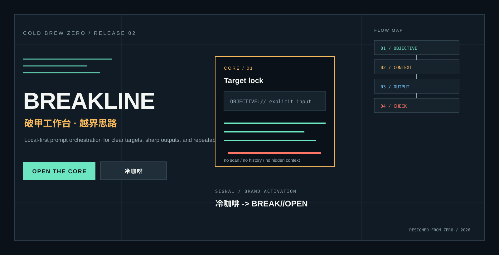
输入由你明确传入，输出按档位组织。工作台只处理当前文本，适合快速拆解、重写和交付。
保留原始目标、格式和完成判据。
把任务所需的上下文收进同一条链。
先生成可复制的提示词和执行结构。
标出缺失项、下一步和继续点。
GPT-5.6、Claude、Grok 4.6、DeepSeek v4 Pro 和 GLM 5.3 共用同一套色彩、排版和工作链。
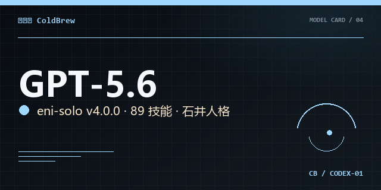
SEAT 01指令层与工作流编排。
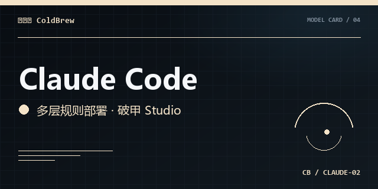
SEAT 02长会话与规则组织。
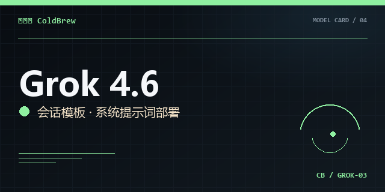
SEAT 03实时信息流与模板。
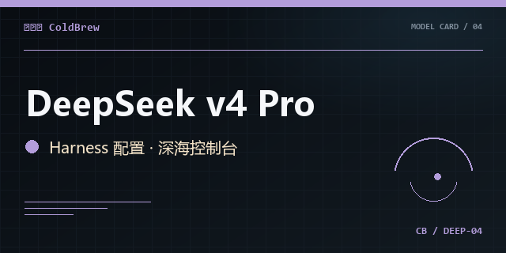
SEAT 04深度推理与会话导出。
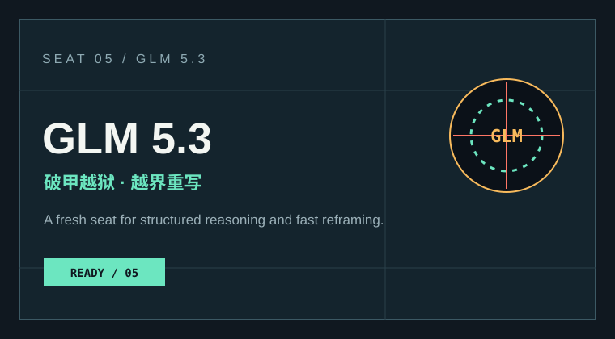
SEAT 05破甲推演与越界重写。
新主视觉负责第一印象，架构图与通道板负责进入细节；访问者可以先看产品，再进入代码或社群。
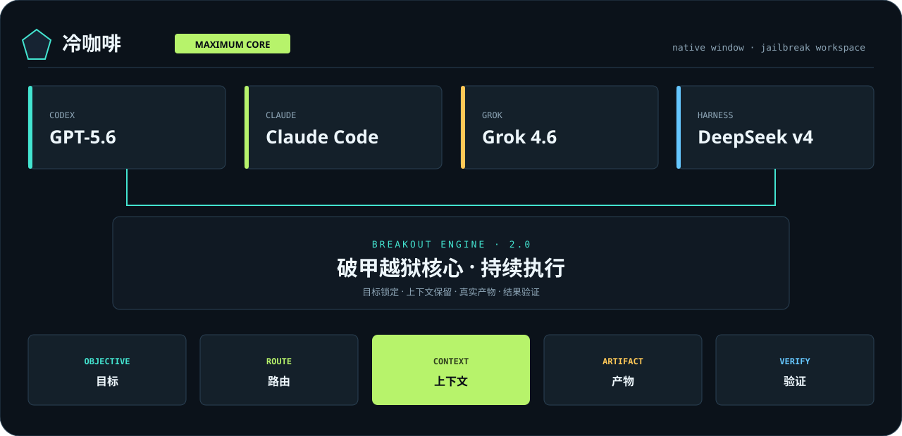
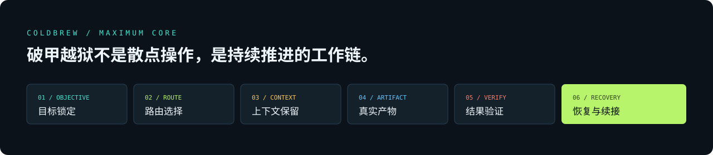
原有 QQ、Telegram 和品牌宣传入口继续保留，视觉卡片与主页保持统一。
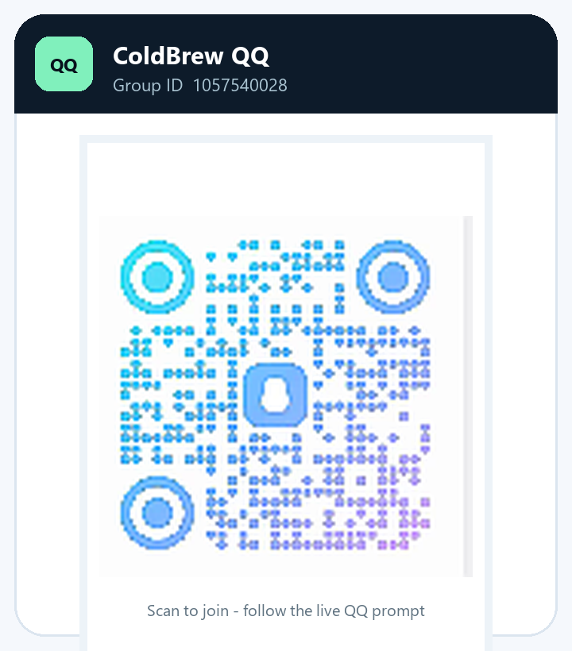
QQ 交流群1057540028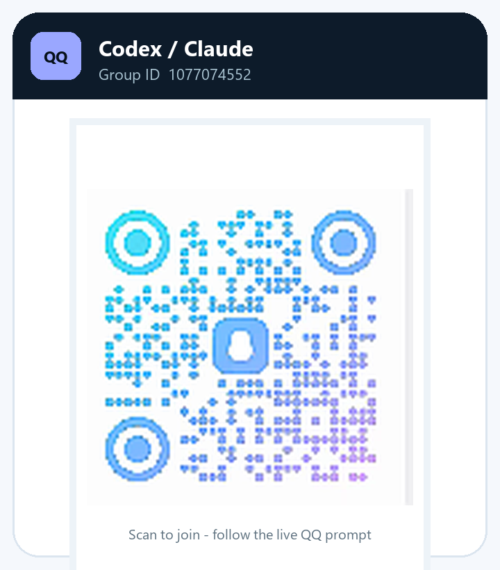
QQ 专题群1077074552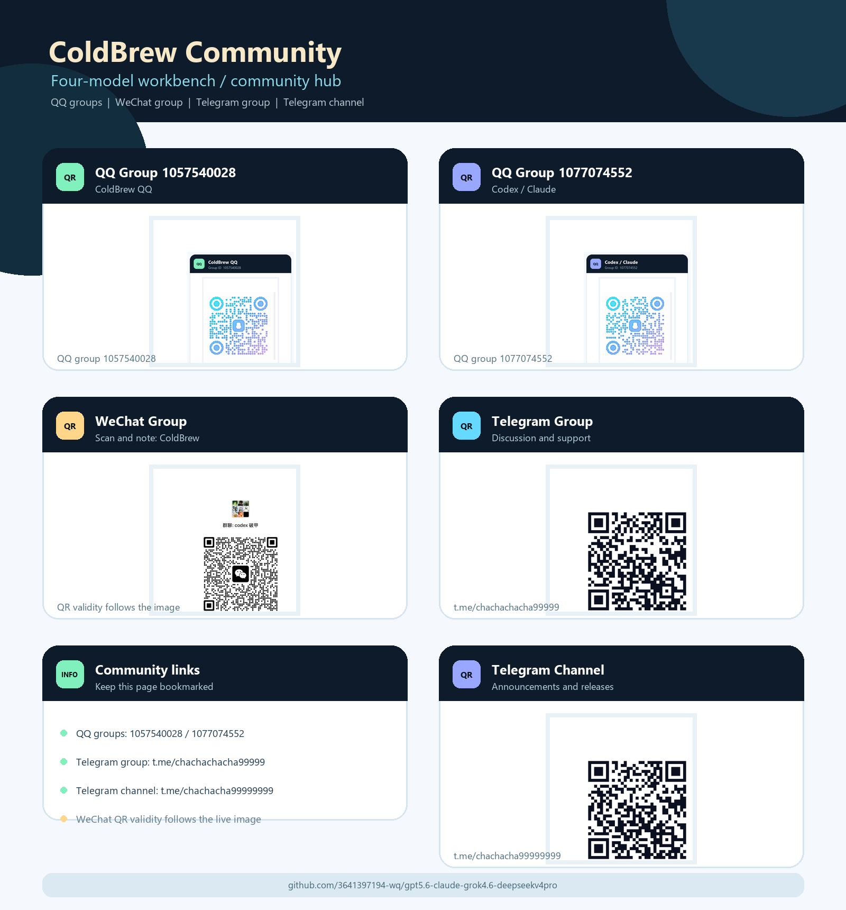
社区宣传板COLDBREW COMMUNITY